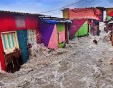
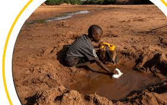
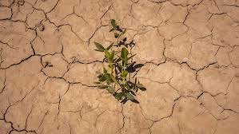
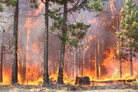
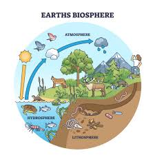
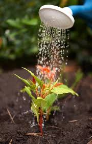
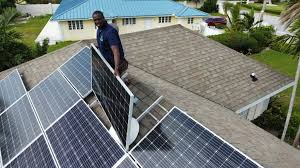
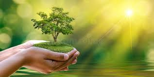

DANGERS OF CLIMATE CHANGE AND HOW TO OVER COME THEM
The dangers resulting from climate change include;
- floods
- wildfires
- increased drought
- disease spread
- air pollution
- landslides




EVERGREEN PROJECT is aiming at solving the above problems as follows;
- Transition to Renewable Energy: Replacing coal, oil, and natural gas with clean energy sources like solar, wind, geothermal, wave, and tidal power.
- Electrification: Switching technologies that use fossil fuels (like cars and heating) to use clean electricity instead (e.g., electric vehicles, heat pumps).
- Protecting and Restoring Natural Carbon Sinks: Halting deforestation and restoring ecosystems like forests, wetlands, and grasslands, which absorb and store carbondioxide
- Waste Management: Implementing a waste hierarchy with a focus on prevention and recycling.
- Water Management: Developing water harvesting plans, improving irrigation efficiency, and managing water resources to cope with droughts and floods.
- Investment and Finance: Shifting public and private investments away from fossil fuels and towards clean energy and climate-resilient projects.



